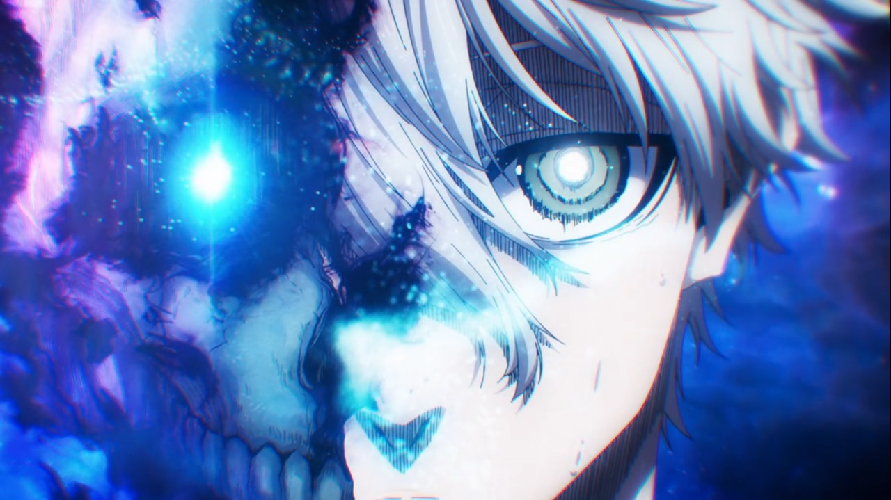

Resumen de los Mangas
BLUELOCK LA PELÍCULA Episodio Nagi
Seishiro Nagi lleva una vida muy aburrida hasta que conoce a Reo Mikage, un compañero de su preparatoria, que sueña con ganar el Mundial, descubre el talento oculto de Nagi y lo inspira a jugar al fútbol para compartir su increíble talento, aunque Nagi se niega a jugar porque no sabe las reglas y no esta interesado en el futbol, pero tras convencerlo de jugar forman un Duo que no a perdido ni un solo partido. Un día recibe una invitación para el misterioso Proyecto Blue Lock, lo que le espera allí es un encuentro con los mejores delanteros de todo el país.
